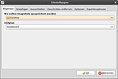
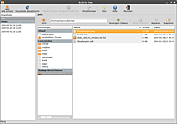
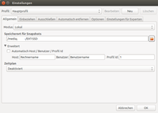

Back In Time
Dieser Artikel wurde für die folgenden Ubuntu-Versionen getestet:
Ubuntu 16.04 Xenial Xerus
Ubuntu 14.04 Trusty Tahr
Zum Verständnis dieses Artikels sind folgende Seiten hilfreich:
 Back In Time
Back In Time  (BiT) ist eine ursprünglich von Dan Oprea entwickeltes Backup-Anwendung, das dem Programm Time Machine von Apple ähnelt. Es basiert auf rsync und cp und bietet grafische Oberflächen für GTK- und Qt-basierte Desktop-Umgebungen an.
(BiT) ist eine ursprünglich von Dan Oprea entwickeltes Backup-Anwendung, das dem Programm Time Machine von Apple ähnelt. Es basiert auf rsync und cp und bietet grafische Oberflächen für GTK- und Qt-basierte Desktop-Umgebungen an.
BiT verzichtet auf große Konfigurationsmöglichkeiten und war ursprünglich für das automatisierte Sichern des eigenen Homeverzeichnis gedacht. Unter Verwendung von Root-Rechten [1] ist aber auch die Sicherung anderer (System-)Verzeichnisse möglich. Das Programm wird seit Ende 2008 entwickelt und steht unter der GNU GPLv2-Lizenz.
Eine (unveränderte) Datei benötigt hiermit nur einmal Plattenplatz im Backup (auch wenn sie Teil vieler Snapshots ist), eine veränderte Datei wird aber immer komplett neu gesichert (Nutzung von rsync, nicht rdiff). Snapshots von großen veränderlichen Dateien (z.B. virtuelle Festplatten) nehmen also viel Backup-Platz in Anspruch, wenn sie nicht vom Snapshot ausgenommen werden.
Als Sicherungsmedien bieten sich allgemein große (ggf. externe) Festplatten oder USB-Sticks an. Back in Time unterstützt keine Aufteilung der Daten auf mehrere Medien. Ab Version 1.0.26 bietet Back In Time die Möglichkeit, über encfs zu verschlüsseln. Dabei ist darauf zu achten, dass Hardlinks unterstützt werden (External IV Chaining kann z.B. nicht genutzt werden). [10]
Alternativ kann man auch das Backupmedium verschlüsseln, z.B. mit LUKS.
Installation¶
Das Programm ist in den offiziellen Paketquellen vorhanden. Es muss eines der beiden Pakete installiert werden [2]:
| Desktop-Umgebung | |
| GNOME | KDE |
Paketliste zum Kopieren: sudo apt-get install backintime-gnome
sudo aptitude install backintime-gnome
|
Paketliste zum Kopieren: sudo apt-get install backintime-kde
sudo aptitude install backintime-kde
|
Ab Ubuntu 16.04 wurden diese beiden Pakete unter einem neuen Namen zusammengeführt:
backintime-qt4 (universe)
 mit apturl
mit apturl
Paketliste zum Kopieren:
sudo apt-get install backintime-qt4
sudo aptitude install backintime-qt4
PPA¶
Das "Personal Package Archiv" (PPA) [3] der Entwickler enthält meist eine aktuellere Version als die offiziellen Paketquellen.
Adresszeile zum Hinzufügen des PPAs:
ppa:bit-team/stable
Hinweis!
Zusätzliche Fremdquellen können das System gefährden.
Ein PPA unterstützt nicht zwangsläufig alle Ubuntu-Versionen. Weitere Informationen sind der  PPA-Beschreibung des Eigentümers/Teams bit-team zu entnehmen.
PPA-Beschreibung des Eigentümers/Teams bit-team zu entnehmen.
Damit Pakete aus dem PPA genutzt werden können, müssen die Paketquellen neu eingelesen werden.
Nach dem Aktualisieren der Paketquellen erfolgt die Installation wie oben angegeben.
Anwendung¶
Das Programm findet man bei Ubuntu-Varianten mit einem Anwendungsmenü unter "Systemwerkzeuge -> Back In Time". Will man Ordner und Dateien sichern, für die man keine Schreibrechte besitzt (also alles außerhalb des eigenen Homeverzeichnis), muss man "Back In Time (root)" verwenden. Hier sollte man allerdings Vorsicht walten lassen, da unter Umständen Systemdateien beschädigt werden können.
Konfiguration¶
 Nach dem ersten Start erscheint der Konfigurationsdialog, in dem man einige wenige Dinge einstellen muss. Hierbei können unterschiedliche Sicherungsprofile angelegt werden. Beim ersten Start wird ein Profil Hauptprofil angelegt in dem die Einstellungen gespeichert werden. So können zum Beispiel unterschiedliche Sicherungsziele in den jeweiligen Profilen definiert werden.
Unter "Allgemein" ist der Ort zu wählen, an dem die Sicherungen gespeichert werden sollen und wie oft eine automatisierte Sicherung erfolgen soll.
Über "Hinzufügen" werden die zu sichernden Verzeichnisse und Dateien ausgewählt, wobei diese im Dateisystem nicht unterhalb des Ordners, in dem gesichert wird, liegen dürfen.
Im Reiter "Ausschließen" werden Dateien oder Verzeichnisse eingetragen die von der Sicherung ausgeschlossen werden.
Der Reiter "Automatisches Entfernen" bietet einige Optionen zum automatischen Entfernen alter Datumskopien.
Bei Back In Time werden Rechte standardmäßig bereits gesichert. "Optionen" wie "Voller rsync modus" sind dazu nicht nötig.
Sicherung¶
 Ein Snapshot (Datumskopie) wird wahlweise automatisch zu bestimmten Zeiten mittels Cron oder manuell innerhalb der grafischen Oberfläche über die Schaltfläche "Snapshot erstellen" erzeugt. Ferner können Snapshots über die Kommandozeile ausgelöst werden. Nach erfolgter Sicherung erscheint in der Zeitleiste ein Eintrag mit dem Sicherungszeitpunkt. Die enthaltenen Dateien und Verzeichnisse werden in der Sicherungsübersicht angezeigt. Versteckte Dateien werden mit der Schaltfläche + sichtbar gemacht.
Wiederherstellung¶
Zum Wiederherstellen verlorener oder veränderter Dateien wird ein Snapshot (Datumskopie) in der Zeitleiste ausgewählt und mit der Schaltfläche "Wiederherstellen" die Datei/en in das Ursprungsverzeichnis zurück kopiert. Vorhandene Datei/en erhalten einen neuen Dateinamen Originaldateiname.backup.datum, um zu vermeiden, dass eine bestehende Datei überschrieben wird.
 Soll eine Wiederherstellung auf einem neuen Rechner oder auf einem neu installierten System mit einem neuen/anderen Rechnernamen erfolgen, muss bis Version 1.0.x die Funktion "Auto Host/Benutzer/Profil ID" deaktiviert und der (neue) Rechnernamen manuell im Feld "Host" eingetragen werden. Das Vorgehen ist ähnlich bei verändertem Benutzernamen. So können Daten auf andere Rechner und anderen Benutzer übertragen werden.
Ab Version 1.1.0 ist eine Option vorhanden, die eine bestehende Konfigurationsdatei importiert und so die Wiederherstellung ohne manuellen Eingriff auf anderen Rechnern ermöglicht.
Grundsätzlich muss die Wiederherstellung nicht zwingend über die grafische Oberfläche erfolgen. Da in das Sicherungsverzeichnis nur geänderte Daten (inkrementell) kopiert werden, können die Dateien einzeln oder auf einmal mittels rsync oder cp bzw. mit einem Dateimanager zurück kopiert werden. Unveränderte Dateien werden als Hardlinks referenziert und sind somit in jedem Snapshot enthalten.
Ausführung mit Anacron¶
Wenn man einen "Zeitplan" angibt, legt das Programm einen Cronjob an, der Backups regelmäßig zu einem bestimmten Zeitpunkt (bei täglichen Backups z.B. um 0:00 Uhr) anlegt. Ist der Rechner zu diesem Zeitpunkt ausgeschaltet, wird aber naturgemäß kein Backup angelegt. Für Nutzer, die ihren Rechner zwischendurch ausschalten, aber trotzdem ein verlässliches tägliches/wöchentliches Backup wollen, ist diese Lösung wenig brauchbar.
Abhilfe schafft der Einsatz von Anacron: Ohne an feste Uhrzeiten gebunden zu sein, prüft das Programm beim Systemstart, ob Aktionen anstehen, und führt diese nach kurzer Verzögerung aus. Leider gibt es speziell bei diesem Punkt deutliche Unterschiede zwischen den verschiedenen Versionen von Back in Time. Vor der weiteren Lektüre wird daher empfohlen, die konkrete Versionsnummer im Hauptmenü unter "Über" zu ermitteln und erst dann den entsprechenden Abschnitt zu lesen.
Hinweis:
Wer Back in Time mit Anacron kombinieren möchte, muss Back in Time zwingend über "Systemwerkzeuge -> Back in Time (root)" aufrufen und konfigurieren. Ohne Root-Rechte [1] vorgenommene Einstellungen werden von Anacron nicht unterstützt bzw. sind erst ab der Version 1.0.26 von Back in Time möglich.
Ab Version 1.1.0 / ab Ubuntu 16.04¶
Nachteil vor Version 1.1.0 war zum einen, dass Anacron nur tageweise gestartet werden konnte (mittlerweile kann Anacron auch stündlich gestartet werden; zum Zeitpunkt, als die Version 1.1.0 entwickelt wurde, konnte Anacron dies allerdings nocht nicht) und zum anderen, dass Anacron immer einen neuen Zeitstempel in die Spool-Datei schrieb, egal ob der Snapshot erfolgreich war oder nicht.
Aus diesen Gründen wird ab dieser Version komplett auf Anacron verzichtet bzw. werden die Funktionen von Anacron nur noch simuliert. Stattdessen wird Cron verwendet. Die genaue Arbeitsweise ist in der FAQ dokumentiert.
Ab Version 1.0.26 / Ubuntu 14.04¶
Zunächst wird über "Systemwerkzeuge -> Back in Time" die gewünschte Sicherung eingestellt (BiT und Anacron können ab der Version 1.0.26 auch ohne Root-Rechte verwendet werden). Der "Zeitplan" wird aktiviert, in dem ein Sicherung über Anacron ausgewählt wird. Dies kann direkt im Zeitplan selektiert werden.
Im Gegensatz zu älteren Versionen muss nichts mehr manuell in die Verzeichnisse /etc/cron.daily/ (für tägliche Sicherung), /etc/cron.weekly/ (wöchentliche Sicherung) oder /etc/cron.monthly/ (monatliche Sicherung) kopiert werden. Die Auswahl von Anacron im Zeitplan schreibt auch nichts (wie vielleicht vermutet) in diese Verzeichnisse (dafür würden Root-Rechte benötigt).
Stattdessen legt die grafische Oberfläche eine Crontab mit Cronjob an, der dann wiederum alle 15 Minuten den Befehl anacron -s -t PFAD/ZUR/CRONTAB -S SPOOL-ORDNER startet. Anacron kümmert sich dabei nur darum, das Datum des letzten Laufs aus der Spool-Datei auszulesen und BIT zu starten, wenn es dran ist.
User-Callback-Skript¶
Unabhängig davon, ob die Datensicherung erfolgreich oder fehlerhaft abgeschlossen wurde, kann es hilfreich sein, diesbezüglich eine Meldung zu erhalten. Hierzu wird auf der BiT-Entwicklerseite ein fertiges User-Callback-Skript zur Verfügung gestellt. Mit Hilfe dieses Skripts erhält man nach Abschluss der Datensicherung eine Statusmeldung. Diese Statusmeldung kann entweder als Desktop-Benachrichtigung oder per E-Mail erfolgen.
Zunächst muss user-callback.notify  in das Verzeichnis ~/.config/backintime/ kopiert werden und anschließend ausführbar gemacht werden. Das Skript muss den Namen user-callback tragen.
in das Verzeichnis ~/.config/backintime/ kopiert werden und anschließend ausführbar gemacht werden. Das Skript muss den Namen user-callback tragen.
Statusmeldung¶
Die Skriptzeilen, welche mit notify-send beginnen, sind für die Statusmeldung auf dem Desktop verantwortlich (siehe auch Benachrichtigungsdienst). Bevor diese Statusmeldung mit Hilfe von BiT getestet wird, kann es hilfreich sein zu testen, ob notify-send korrekt funktioniert. Diesbezüglich einfach den Befehl
notify-send "Achtung" "Hallo"
in einem Terminalfenster ausführen. Taucht für einige Sekunden oben rechts ein Hinweis auf, hat man die Bestätigung, dass notify-send korrekt arbeitet. Bevor der anschließende Live-Test mit BiT durchgeführt wird ist es empfehlenswert, die Zeilen im Skript, welche mit notify-send beginnen, dahingehend zu modifizieren, dass diese nicht nur für einige Sekunden, sondern permanent erhalten bleiben, bis die Meldungen mit der Maus geschlossen werden. Dazu muss die Option --urgency low auf --urgency critical geändert werden. Nachfolgend ein Beispiel: Die Skriptzeile
notify-send --urgency low --icon=face-plain "BackInTime" \
müsste zu
notify-send --urgency critical --icon=face-plain "BackInTime" \
geändert werden.
Statusmeldung per E-Mail¶
Damit es möglich ist, dass BiT nach abgeschlossener Datensicherung eine E-Mail zum Status versendet, muss zum einen ein Mailserver (der die Mail verschickt) und zum anderen ein Mailclient (der die Mail entgegen nimmt) installiert werden.
Um das Linux-System zum Mailserver zu machen, muss ein MTA (Mail Transfer Agent) installiert werden. Hierfür sollte Postfix oder Exim4 verwendet werden.
Um einen Mailclient zu installieren, sollte das Paket mailutils installiert werden. Dieses Paket enthält den Mailclient mail. mail ist mit Thunderbird zu vergleichen, allerdings für die Kommandozeile ausgelegt. Schlussendlich muss das Skript entsprechend angepasst werden, sprich es muss die entsprechende E-Mail-Adresse im Skript hinterlegt werden.
Weitere Informationen und Links zu oben genannten Informationen sind in den Kommentaren des User-Callback-Skripts zu finden.
Problembehebung¶
Snapshot kann nicht erstellt werden¶
Wenn sich Dateien nicht sichern lassen, erhält man nun am unteren Rand des Programmfensters von Back In Time z.B. die Meldung
"Fehler: konnte Snapshot 08.05.2011 10:15:00 nicht erstellen!!!"
In diesem Fall kann man unter "Settings -> Options" den Eintrag "Continue on Errors (keep incomplete Snapshots)" auswählen, womit man das bisherige Verhalten wieder erhält, wobei ein so erstellter Snapshot dann in der Liste den Zusatz "(WITH ERRORS!)" erhält. Nun kann man sich im oberen Menü über "View Snapshot Log" das Protokoll anzeigen lassen und eine Suche nach Ursachen starten: Welches Verzeichnis oder welche Datei genau die Fehler verursacht und diese einfach auf die Liste der nicht zu sichernden Ordner und Dateien setzen.
Benutzerverzeichnis ist voll wegen großer Log-Datei¶
Back in time protokolliert die Backup-Vorgänge (auf Datei-Ebene) sehr detailliert in der Datei ~/.local/share/backintime/takesnapshot_log. Wenn diese Datei irgendwann zu groß ist, hat das Benutzerverzeichnis keinen freien Speicherplatz mehr.
Lösungsmöglichkeiten:
Diese Datei im Dateimanager oder auf der Kommandozeile löschen.
Eine andere präventive Möglichkeit ist, die Log-Granularität einzustellen. Dazu in der Benutzeroberfläche in den Einstellungen des Profils im Reiter "Optionen" das Auswahlfeld bei "Log-Optionen" entsprechend anpassen. Diese Einstellung muss man für jedes Profil einzeln anpassen!
Es ist in der Benutzer-Oberfläche nicht möglich, das Verzeichnis der Log-Datei zu ändern (siehe 691731), um es z.B. auf ein anderes/größeres Laufwerk zu verschieben.
Backups pausieren oder abbrechen¶
Diese Möglichkeit bietet Back In Time nicht an. Als Notlösung kann man alle dazugehörigen Prozesse mit folgendem Befehl beenden:
ps auxfww|grep backintime|awk '{print $2}'|xargs sudo kill -9 Dass Back In Time intern mit dem rsync-Kommando arbeitet, sollte kein Problem darstellen. Ungewollte Nebeneffekte durch obiges Kommando sind aber nicht ausgeschlossen.
WARNING: A backup is already running¶
Läuft bereits ein Backup, kommt auf der Kommandozeile die Meldung, dass bereits ein Backup durchgeführt wird. Sollte das vorherige Backup aufgrund eines Stromausfalls oder ähnlichem nicht korrekt beendet worden sein, kann es sein, dass diese Meldung angezeigt wird, obwohl definitiv kein Backup-Prozess läuft. In diesem Fall hilft es, die Datei worker.lock zu löschen:
rm ~/.local/share/backintime/worker.lock
Backup auf neues Laufwerk umziehen¶
Wenn das Sicherungslaufwerk an seine Grenzen stößt oder einen Defekt aufweist, ist es notwendig das Sicherungslaufwerk auszutauschen. Wurde bereits über einen längeren Zeitraum regelmäßig eine inkrementelle Datensicherung mit Back in Time gemacht, möchte man diesen Datenbestand nicht verlieren. Um den Datenbestand auf das neue Laufwerk zu kopieren, müssen unbedingt die Hardlinks mitgenommen werden.
Die Daten können dazu mittels cp:
cp -a QUELLE ZIEL
oder mittels rsync:
rsync -avH --progress QUELLE ZIEL
auf das neue Laufwerk kopiert werden. Anschließend wird im Programm der Speicherort des Backups auf das neue Laufwerk eingestellt.
Rechte werden nicht korrekt wiederhergestellt¶
Dies kann passieren, wenn der gleiche Zielordner von "Back in Time" sowie "Back in Time (root)" mit Root-Rechten verwendet wurde. Abhilfe schafft das Verwenden eines gesonderten Ordners im Root-Modus oder das Löschen der alten Datensicherungen in "Back in Time (root)" mit Root-Rechten.
Backup wird nicht inkrementell erzeugt, auf einem mit encfs verschlüsselten Medium¶
Werden keine Hardlinks genutzt bzw. erzeugt kann es daran liegen, dass beim Erzeugen des verschlüsselten Verzeichnisses die Option External IV Chaining gesetzt wurde. Unter diesem Umstand können keine Hardlinks erzeugt werden.
Links¶
Intern¶
Datensicherung
 Grundlagen, wichtige Verzeichnisse
Grundlagen, wichtige VerzeichnisseDatensicherung auf NAS - Datensicherung auf ein externes NAS mit Hilfe von cifs, anacron und Back in Time
Notfall
Was tun in Notfällen?
Extern¶
aktuelle Projektseite
Toolbox: Backups mit Back In Time
 - Artikel heise Open Source, 04/2013
- Artikel heise Open Source, 04/2013EasyLinux zu Back In Time
- Blogbeitrag, 02/2011Zeitsprünge - Back in Time
- Artikel LinuxUser, 05/2009TimeShift
- nur für Systemdateien (keine Benutzerverzeichnisse), nutzt rsynchttp://manpages.ubuntu.com/manpages/xenial/man1/encfs.1.html - encfs Hardlinkproblematik
- Erstellt mit Inyoka
-
 2004 – 2017 ubuntuusers.de • Einige Rechte vorbehalten
2004 – 2017 ubuntuusers.de • Einige Rechte vorbehalten
Lizenz • Kontakt • Datenschutz • Impressum • Serverstatus -
Serverhousing gespendet von